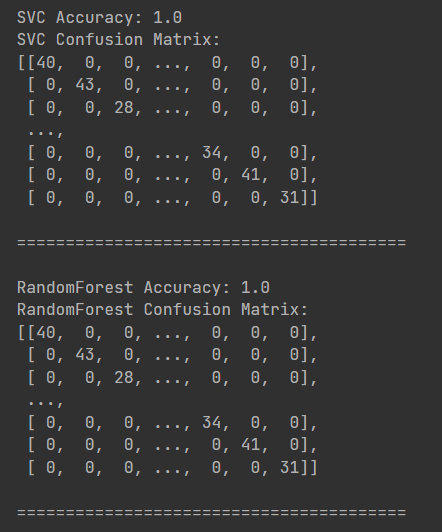

User Input
Patients enter their symptoms through an intuitive interface.
Interactive Symptom Input Form
Model Training and Datasets
The model is built using the Support Vector Classifier (SVC) algorithm. The training dataset includes disease symptoms, descriptions, precautions, medications, and diet recommendations.
Here are the datasets used for training:
| Disease | Symptom 1 | Symptom 2 | Symptom 3 | Symptom 4 |
|---|---|---|---|---|
| Fungal infection | itching | skin_rash | nodal_skin_eruptions | dischromic_patches |
| Fungal infection | skin_rash | nodal_skin_eruptions | dischromic_patches | |
| Fungal infection | itching | nodal_skin_eruptions | dischromic_patches | |
| Fungal infection | itching | skin_rash | dischromic_patches | |
| Fungal infection | itching | skin_rash | nodal_skin_eruptions | |
| Allergy | continuous_sneezing | shivering | chills | watering_from_eyes |
| Allergy | shivering | chills | watering_from_eyes | |
| GERD | stomach_pain | acidity | ulcers_on_tongue | vomiting |
| GERD | stomach_pain | ulcers_on_tongue | vomiting | cough |
| Fungal infection | itching | skin_rash | dischromic_patches | |
| Drug Reaction | itching | skin_rash | stomach_pain | burning_micturition |
| Drug Reaction | skin_rash | stomach_pain | burning_micturition | spotting_ urination |
| Drug Reaction | itching | stomach_pain | burning_micturition | spotting_ urination |
| Drug Reaction | itching | skin_rash | burning_micturition | spotting_ urination |
| Drug Reaction | itching | skin_rash | stomach_pain | spotting_ urination |
| Drug Reaction | itching | skin_rash | stomach_pain | burning_micturition |
| Peptic ulcer diseae | vomiting | loss_of_appetite | abdominal_pain | passage_of_gases |
| Peptic ulcer diseae | vomiting | indigestion | abdominal_pain | passage_of_gases |
| Peptic ulcer diseae | indigestion | loss_of_appetite | abdominal_pain | passage_of_gases |
| Peptic ulcer diseae | vomiting | loss_of_appetite | abdominal_pain | passage_of_gases |
| Peptic ulcer diseae | vomiting | indigestion | abdominal_pain | passage_of_gases |
| Peptic ulcer diseae | vomiting | indigestion | loss_of_appetite | passage_of_gases |
| Peptic ulcer diseae | vomiting | indigestion | loss_of_appetite | abdominal_pain |
| Peptic ulcer diseae | vomiting | indigestion | loss_of_appetite | abdominal_pain |
| Peptic ulcer diseae | vomiting | indigestion | loss_of_appetite | abdominal_pain |
| Peptic ulcer diseae | vomiting | indigestion | loss_of_appetite | abdominal_pain |
| AIDS | muscle_wasting | patches_in_throat | high_fever | extra_marital_contacts |
| AIDS | patches_in_throat | high_fever | extra_marital_contacts | |
| AIDS | muscle_wasting | high_fever | extra_marital_contacts | |
| AIDS | muscle_wasting | patches_in_throat | extra_marital_contacts |
# Example: Dataset Loading
import pandas as pd
symptoms_df = pd.read_csv("datasets/symptoms.csv")
precautions_df = pd.read_csv("datasets/precautions.csv")
Data Preprocessing
Symptoms are transformed into a machine-readable format.
# Preprocessing Symptoms
input_vector = np.zeros(len(symptoms_dict))
for symptom in patient_symptoms:
input_vector[symptoms_dict[symptom]] = 1

Model Prediction
Machine learning model generates precise health predictions.
# SVM Classification
from sklearn.svm import SVC
svc = SVC(kernel='linear', probability=True)
svc.fit(X_train, y_train) # Training Model
predicted = svc.predict([input_vector])

Output Retrieval
Comprehensive health insights are retrieved and presented.
# Retrieving Detailed Insights
desc = description[description['Disease'] == predicted_disease]['Description']
precautions = precautions_df[precautions_df['Disease'] == predicted_disease]